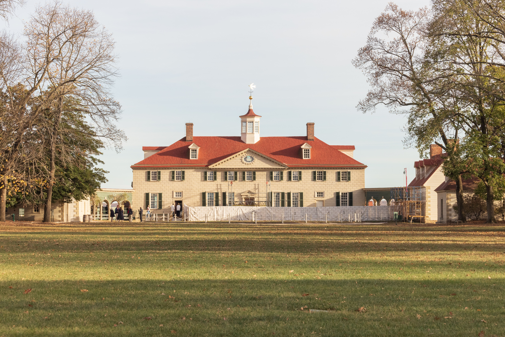
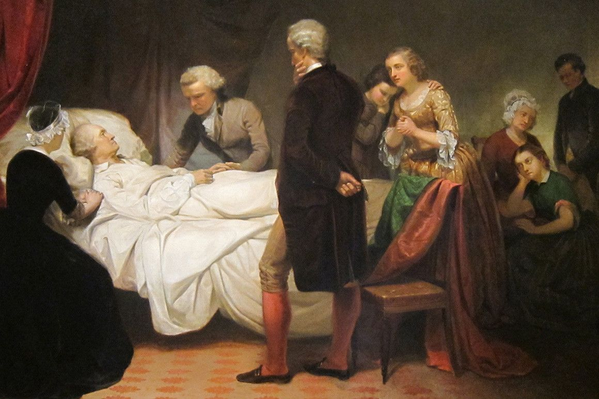

george_washington
3 bejegyzés
193 követő
42 követés
George Washington🐎🌾
+
Új
Nehéz tél volt, de nem adjuk fel. A szabadságért harcolunk!

Otthon, ahol igazán önmagam lehetek.🐎🌾

1799-ben egy korszak ért véget. Egy vezető, aki nem a hatalmat, hanem a szabadságot választotta.